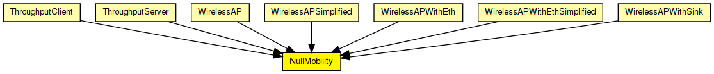
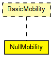

This mobility module does nothing; it can be used for stationary nodes.
Author: Andras Varga
The following diagram shows usage relationships between types. Unresolved types are missing from the diagram.
The following diagram shows inheritance relationships for this type. Unresolved types are missing from the diagram.
| Name | Type | Description |
|---|---|---|
| ThroughputClient | compound module | (no description) |
| ThroughputServer | compound module | (no description) |
| WirelessAP | compound module |
Models a 802.11 Access Point. It can be used in conjunction with WirelessHost, or any other host model containing WirelessNicSTA. |
| WirelessAPSimplified | compound module |
Models a 802.11 Access Point, but using a simplified NIC that does not support handovers. It should be used in conjunction with WirelessHostSimplified, or any other host model containing WirelessNicSTASimplified. |
| WirelessAPWithEth | compound module |
Models a 802.11 Access Point with Ethernet ports. It can be used in conjunction with WirelessHost, or any other host model containing WirelessNicSTA. |
| WirelessAPWithEthSimplified | compound module |
Models a 802.11 Access Point with Ethernet ports, but using a simplified NIC that does not support handovers. It can be used in conjunction with WirelessHostSimplified, or any other host model containing WirelessNicSTASimplified. |
| WirelessAPWithSink | compound module |
Well, it Models a 802.11 Access Point with a Sink. |
| Name | Type | Default value | Description |
|---|---|---|---|
| x | double | -1 |
start x coordinate (-1 = display string position, or random if it's missing) |
| y | double | -1 |
start y coordinate (-1 = display string position, or random if it's missing) |
| Name | Value | Description |
|---|---|---|
| display | i=block/cogwheel_s |
// // This mobility module does nothing; it can be used for stationary nodes. // // @author Andras Varga // simple NullMobility like BasicMobility { parameters: double x = default(-1); // start x coordinate (-1 = display string position, or random if it's missing) double y = default(-1); // start y coordinate (-1 = display string position, or random if it's missing) @display("i=block/cogwheel_s"); }